This is my third (technically fourth) custom lightsaber. This saber has a half-metal, half-wooden hilt. It features an emitter similar in style to Anakin's 2nd saber/Luke's first saber/Rey's first saber
(a lot of people have used that thing). originally, this part of the saber was going to have a claw coming out of the back but I ended up not doing that. You can see the original idea in a sketch I made below.
The 2nd component is a gear-style saber extension, which holds the illuminated switch in place. Next, we have a female-to-female saber extension with screws to give the saber an
industrial feel. All metal parts were purchased from The Custom Saber Shop, great place to buy your lightsaber stuff I recommend them (not sponsored). Finally, the wooden part of the saber is made out of Black Limba wood which comes
from the Terminalia superba tree. I got the wood off Amazon in 2-inch turning blocks. I don't have a lathe, so instead, after drawing a template on one side, I cut the wood down a bit, basically removing all four corners, and then
turned it on my belt sander with 50-grit sandpaper. While doing this, the sander slipped out of my vise, and I ended up sanding a bit of skin off my wrist, would not recommend. Once I got the wood to my desired shape, I changed
the 50-grit belt for a 120-grit one and began to smooth the wood out. When I was happy with that, I then hit it with a quick 220-grit hand sanding. To finish and seal the wood, I used some boiled linseed oil which I already had
laying around.
The saber is powered by an 18650 battery, same as the ones I used for my 2nd saber. Unlike that saber, this one has a Proffie V3.9 inside of it.
Wiring the saber wasn't too bad, just got to measure your cable runs so they're not too long or too short. However... I did do something stupid and ended up getting a smoke signal from the board. Miraculously, the board still works!!
Not sure how, but I haven't had any problems with it in the last few weeks since I've been done with this prop. I got very lucky.
The Jedi that wielded this lightsaber lived during the prequel era/Clone Wars (22 BBY and 19 BBY). This Jedi tended to look inwards and rarely Drew his blade, relying more on the Force to avoid battles before they could take place.
They were known among their peers as a peacekeeper in trying times. Their lightsaber reflects this. It is partly made of wood to symbolize the way this Jedi was in tune with nature and the Force.
However, the hilt is not completely made of wood. This symbolizes the fact that this Jedi is not opposed to conflict, just tries to avoid it. Unfortunately, this Jedi was killed during order 66 by a temple guard who turned to the dark side and later became the grand Inquisitor.
 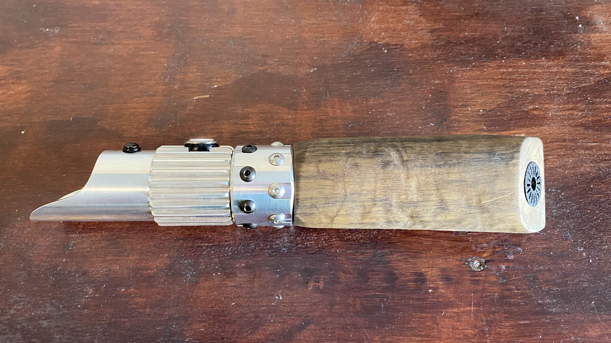
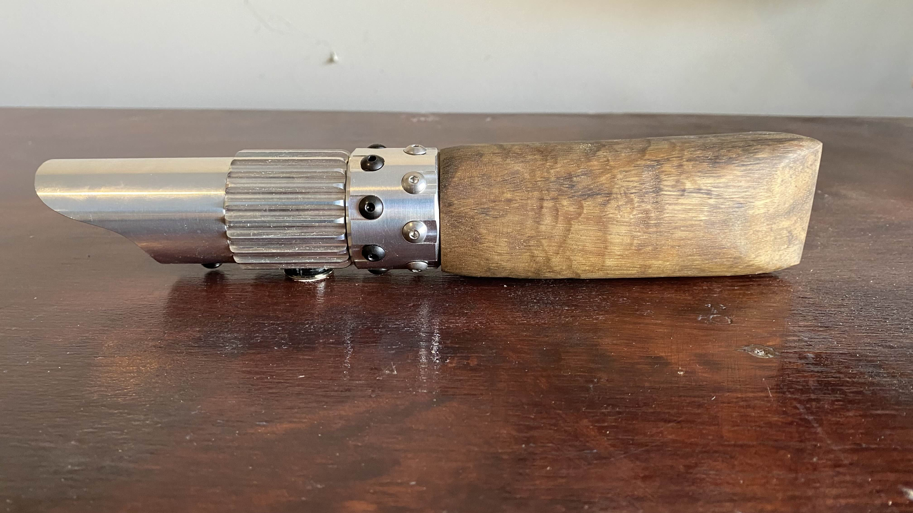
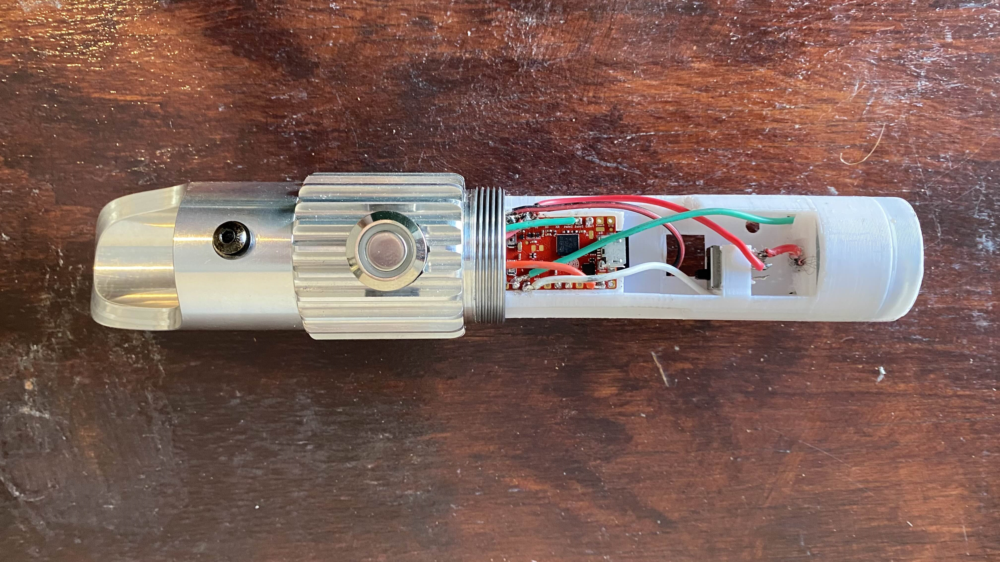
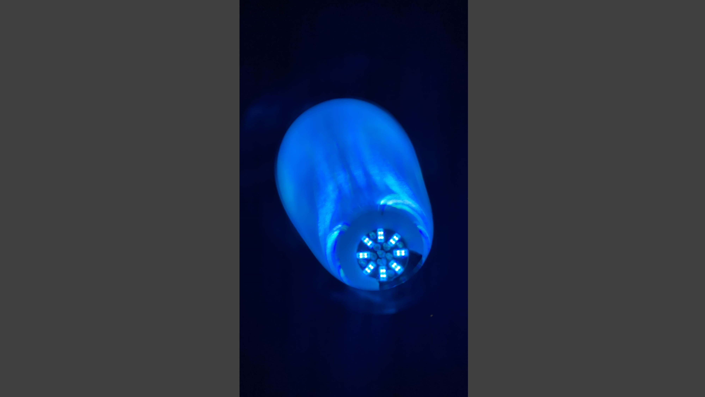
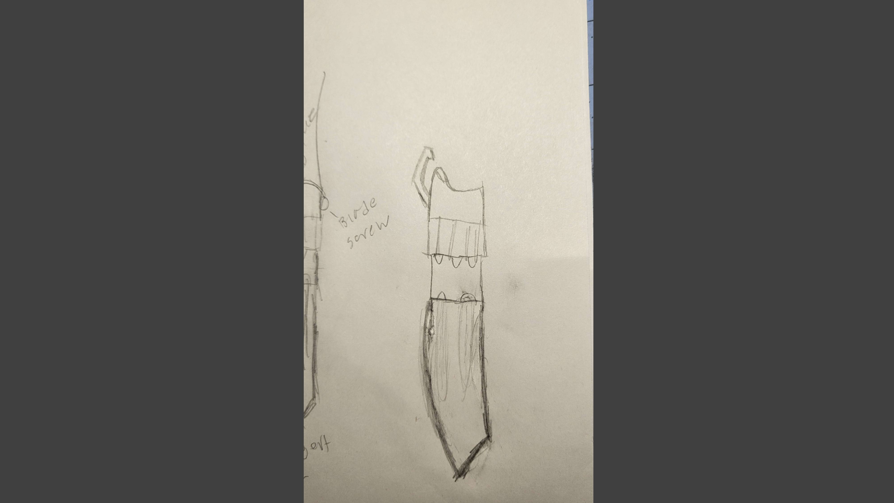
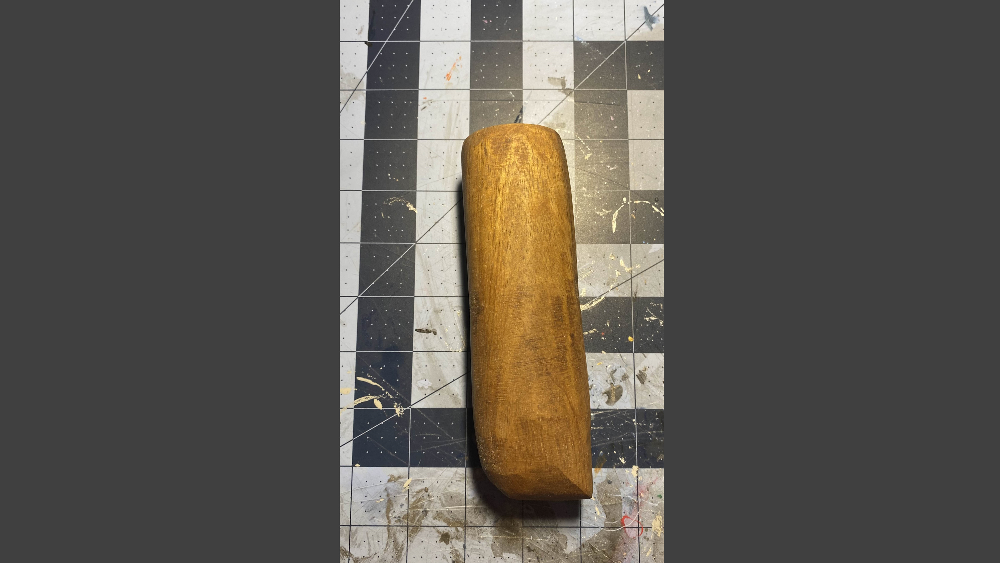
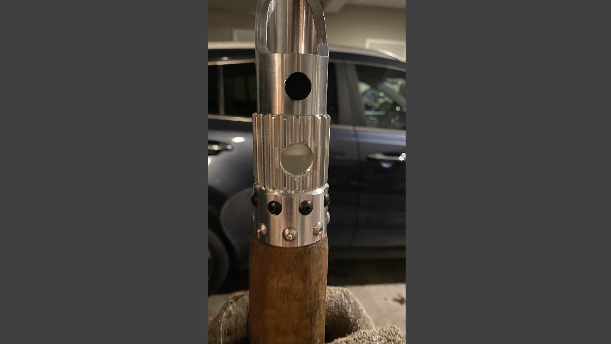
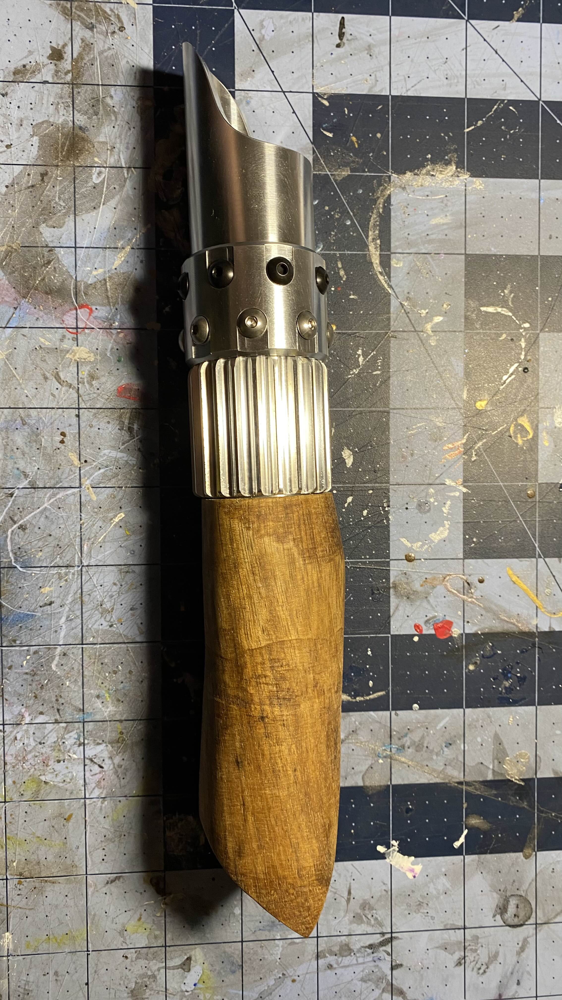
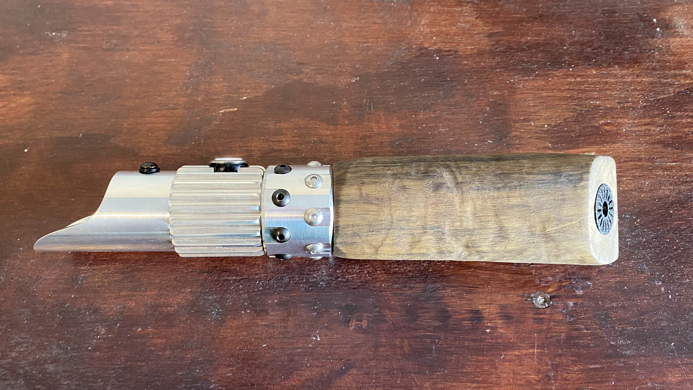
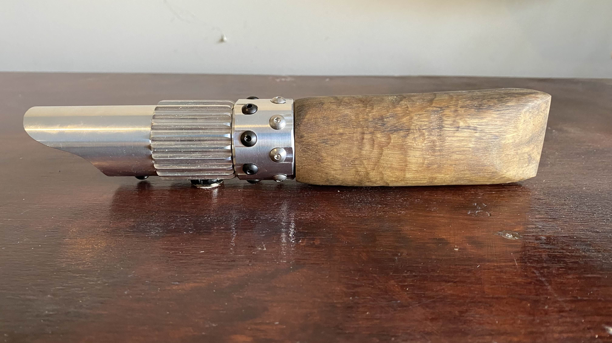
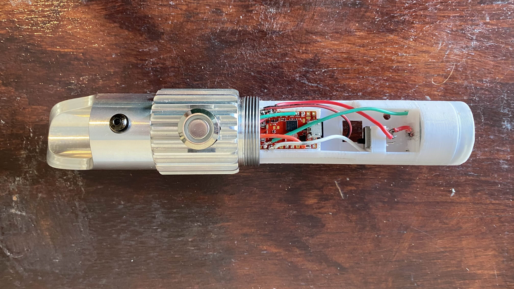
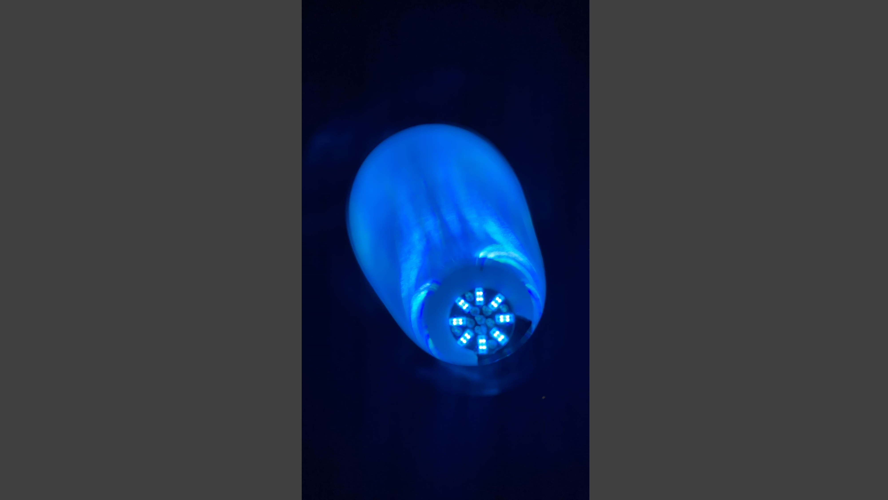
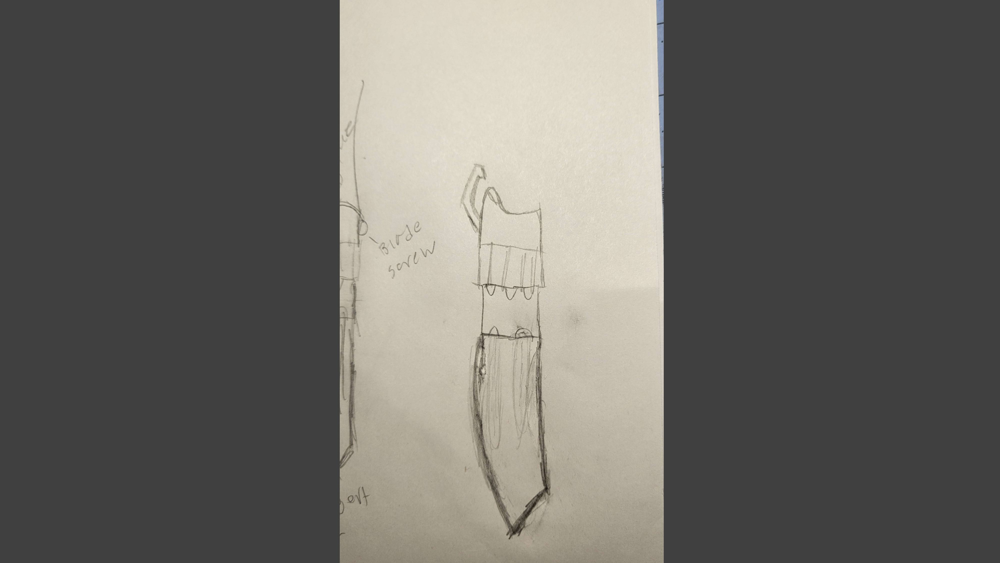
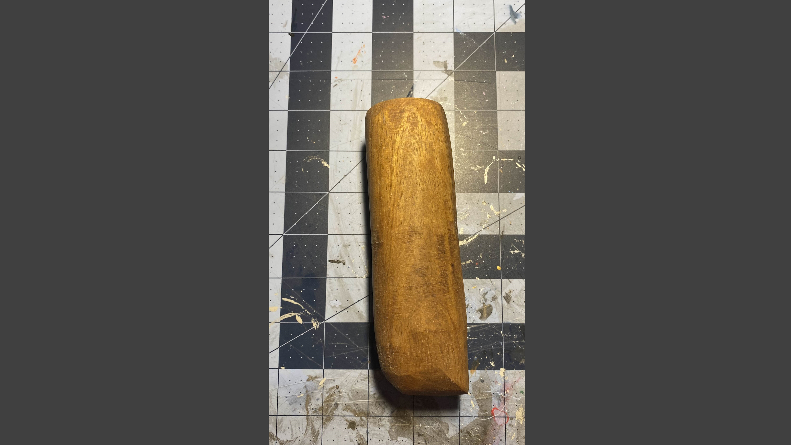
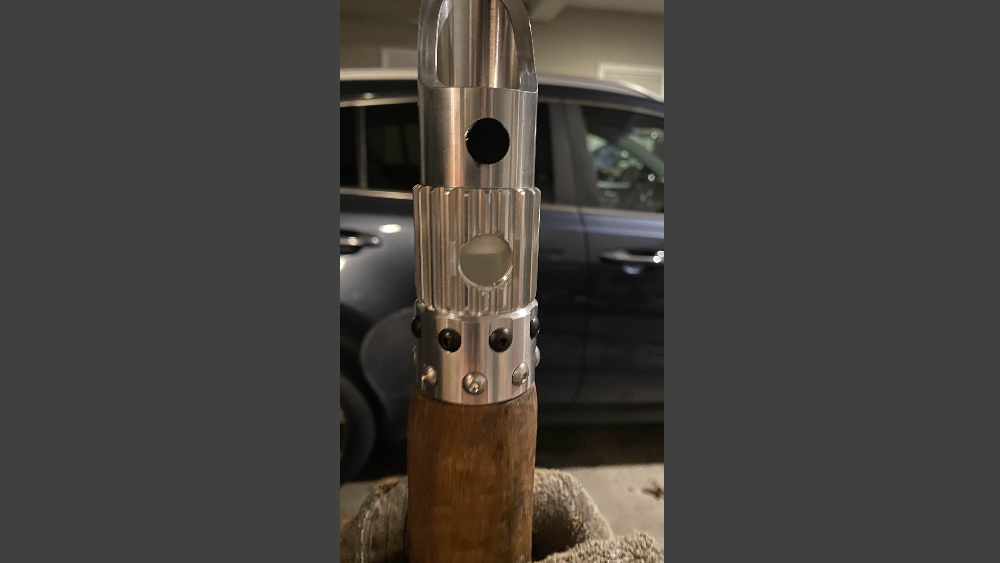
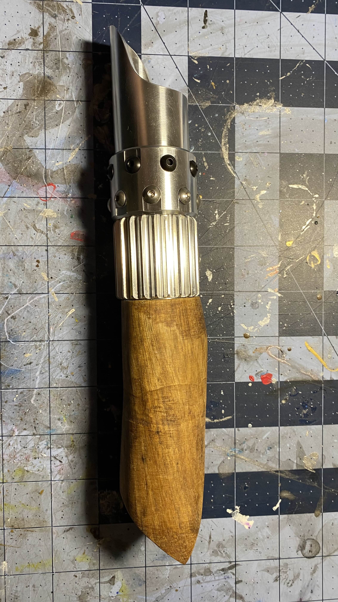